《麻将宝典》是一款根据世界麻将组织2014年修订版国际《麻将竞赛规则》进行编写的iOS/Android平台App。 V2.1.2主要功能包括麻将计算番数、麻将教学，后续版本会添加更多功能。
《麻將寶典》是一款根據世界麻將組織2014年修訂版國際《麻將競賽規則》進行編寫的iOS/Android平台App。 V2.1.2主要功能包括麻將計算番數、麻將教學，後續版本會添加更多功能。
'Mahjong Bible' is an iOS/Android app which is based on the 2014 revised international 'Mahjong Competition Rules' published by the World Mahjong Organization. V2.1.2 includes scoring Fan points, Mahjong teaching, and the subsequent version will add more features.
「麻雀寶典」は、世界麻雀組織が2014年に改訂した「国際麻雀競技規則」に基づいて作成したiOS/Android用のアプリです。 V2.1.2の主な機能は麻雀の番数計算、麻雀の教学を含む、将来のバージョンでは、より多くの機能が追加されます。
App Store下载链接：
App Store下載鏈接：
App Store Download Link：
App Storeダウンロードリンク：
App Store
《麻将宝典》提供了简体中文、繁体中文、英文和日文共4种不同的显示语言。 默认情况下，App将根据您的操作系统的语言设置，自动选择最佳显示语言。 当您希望切换到其他语言时，可以点击首页左上角的“≡”按钮，选择第三项“更改语言”，在弹出的语言列表中进行选择，如下图。
《麻將寶典》提供了簡體中文、繁體中文、英文和日文共4種不同的顯示語言。 默認情況下，App將根據您的操作系統的語言設置，自動選擇最佳顯示語言。 當您希望切換到其他語言時，可以點擊首頁左上角的“≡”按鈕，選擇第三項“更改語言”，在彈出的語言列表中進行選擇，如下圖。
'Mahjong Bible' provides 4 different display languages: Simplified Chinese, Traditional Chinese, English and Japanese. By default, the App will automatically select the best display language according to the language setting of your operating system. When you want to switch to another language, you can click the "≡" button at the upper left corner of the homepage, select the third item "Change Language", and select your preferred language from the pop-up list, as shown below.
「麻雀寶典」は、簡体字中国語、繁体字中国語、英語、日本語の4つの異なる表示言語を提供します。 デフォルトでは、アプリはオペレーティングシステムの言語設定に従って最適な表示言語を自動的に選択します。 別の言語に切り替える場合は、ホームページの左上隅にある「≡」ボタンをクリックし、3番目の項目「言語の変更」を選択して、以下に示すようにポップアップ言語リストから選択できます。
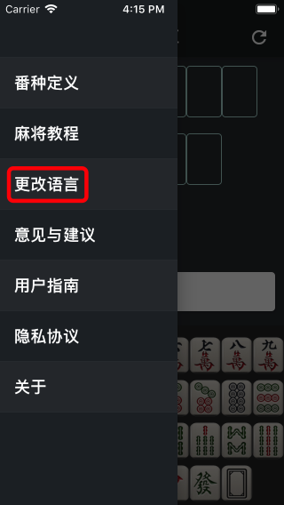 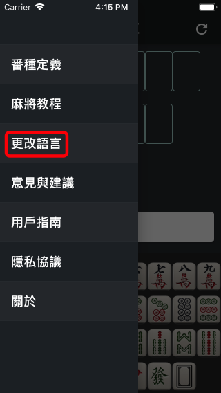 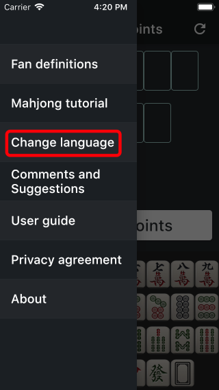 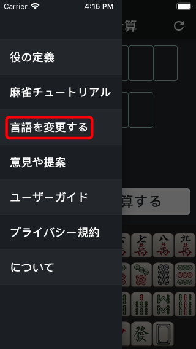要输入麻将，请首先点击界面上方的输入位置，此时被点击的位置下方会出现输入提示三角，同时键盘会自动弹出。 您可以通过键盘输入麻将，如下图。
要輸入麻將，請首先點擊界面上方的輸入位置，此時被點擊的位置下方會出現輸入提示三角，同時鍵盤會自動彈出。 您可以通過鍵盤輸入麻將，如下圖。
To enter mahjong, please first tap the input position at the top of the interface, the input prompt triangle will then appear under the position, and the keyboard will pop up automatically. You can enter mahjong through the keyboard, as shown below.
麻雀を入力するには、まずインターフェイス上部の入力位置をクリックします。 このとき、クリックした位置の下に入力プロンプトの三角形が表示され、キーボードが自動的にポップアップします。 以下のように、キーボードから麻雀を入力できます。
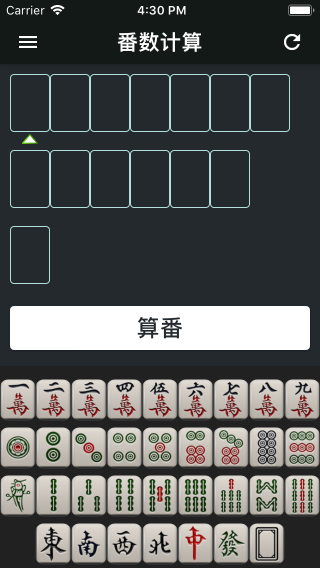 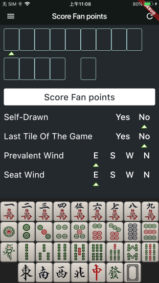 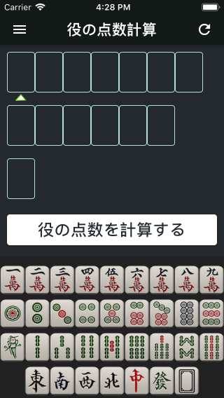对于暗杠、明杠、碰牌和吃牌的情况，请先输入第一张牌，然后点击键盘上方功能区中对应的功能按钮即可。 例如，如果想输入暗杠3条，首先在界面上方点击输入位置，然后在键盘中点击“3条”，最后点击键盘上方的“暗杠”按钮即可。 再例如，要输入吃牌345万，首先在界面上方点击输入位置，然后在键盘中点击“3万”，最后点击键盘上方的“明顺”按钮即可，程序会自动补齐4万和5万。如下图所示。
對於暗槓、明槓、碰牌和吃牌的情況，請先輸入第一張牌，然後點擊鍵盤上方功能區中對應的功能按鈕即可。 例如，如果想輸入暗槓3索，首先在界面上方點擊輸入位置，然後在鍵盤中點擊“3索”，最後點擊鍵盤上方的“暗槓”按鈕即可。 再例如，要輸入吃牌345萬，首先在界面上方點擊輸入位置，然後在鍵盤中點擊“3萬”，最後點擊鍵盤上方的“明順”按鈕即可，程序會自動補齊4萬和5萬。如下圖所示。
For Concealed Kong, Melded Kong, Pung and Chow, please enter the first mahjong, and then tap the corresponding function button above the keyboard. For example, if you want to input a Kong of Bamboo 3, first click a position at the top of the page, then tap 'Bamboo 3' on the popup keyboard, and finally tap the 'Concealed Kong' function button above the keyboard. Another example is when you want to input a Chow of Character 3,4,5, first click a position at the top of the page, then tap 'Character 3' on the popup keyboard, and finally tap the 'Melded Chow' button, the Character 4 & 5 will be added automatically. As shown below.
暗槓、明槓、碰牌、チー牌の場合は、最初の牌を最初に入力してから、キーボードの上の機能パネルにある対応する機能ボタンをクリックしてください。 たとえば、3索の暗槓を入力する場合は、最初にインターフェイスの上部にある入力位置をクリックし、次にキーボードの「3索」をクリックして、最後にキーボードの上にある「暗槓」ボタンをクリックします。 別の例として、345萬のチー牌を入力するには、まずインターフェイスの上部にある入力位置をクリックし、次にキーボードの「3萬」をクリックして、最後にキーボードの上にある「明顺」ボタンをクリックします。 プログラムにより、4萬と5萬が自動的に入力されます。以下に示すように。
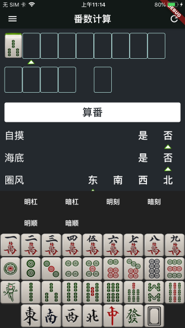 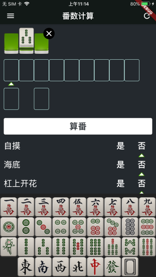 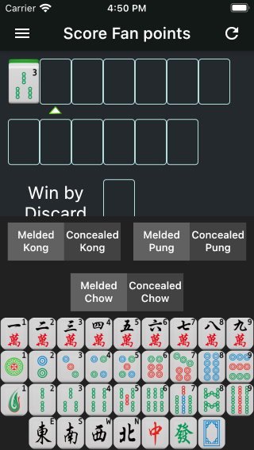 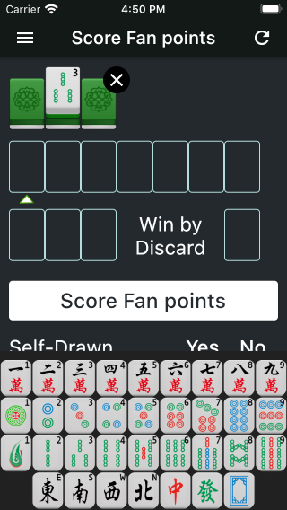需要注意的是，有些功能键在特殊情况下不可用，例如字牌（东南西北中发白）是无法吃牌的，所以此时不显示明顺、暗顺按钮。
Please keep in mind that some function buttons are not available in special cases. For example, the Honor Tiles(East, South, West, North, White Dragon, Red Dragon and Green Dragon) cannot make a Chow, so at this time the Concealed Chow and Melded Chow buttons are not displayed.
ただし、特殊な状況下では使用できないファンクションキーもあります。たとえば、字牌（東南西北中発白）はチーができないので、現時点では「明顺」、「暗顺」のボタンは表示されていません。
当输入完成后点击'算番'按钮，App会开始计算番数并显示计算结果。如果输入有误，App会提示错误信息。
When complete entering all Mahjong, tap the 'Score fan points' button and App will score the points. If there is an error, the App will prompt you with an error message.。
在'算番'按钮下方可以设置其他信息，如自摸、绝张、圈风和门风等。
you can setup other information below the 'Score fan points' button, such as Self-Drawn, Last Tile, Prevalent Wind and Seat Wind, etc.
点击页面左上角功能键将打开抽屉页，点击'番种定义'可以查看全部番种的详细定义。
Tap the function button at the top left corner of the page, the drawer page will be opened. Tap the 'Fan definitions' item to see the detailed definition of all Mahjong Fans.
点击抽屉页中的'意见与建议'可以以邮件形式反馈您的意见和建议，我会第一时间进行解答，感谢您的支持！
Tap the 'Comments and Suggestions' item in the drawer page to feedback your comments and suggestions by email. I'll be the first time for you to answer and hear. Thanks for your support!
App作者：李朴之
App developer: 李朴之 (Puzhi Li)